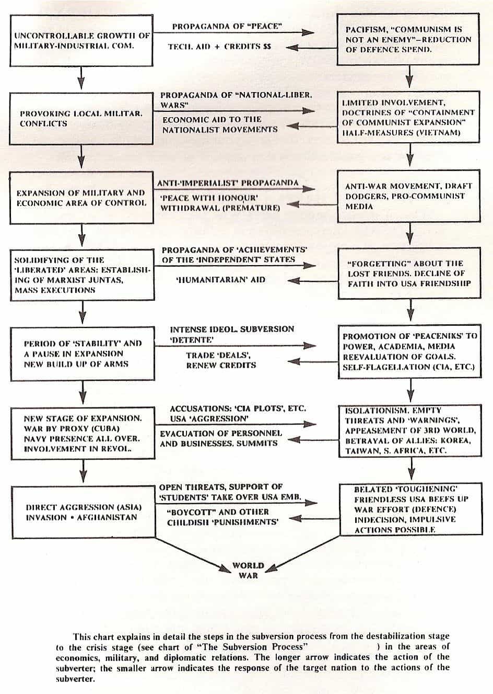

< < < Back
Modern Social Justice Warriors Use The Same Subversion Strategies As The USSR – Return Of Kings
By employing the principles of divide-and-conquer, Communist Russia destabilized neighboring nations in order to subjugate them. These were incorporated as “Soviet Republics” into the USSR. Whilst one could argue that the Soviet Union was a collection of republics forming a power bloc, the truth is that all power was held in Moscow, and the leaders of the other Soviet Republics were puppets of the Kremlin.
The communists used two main methods to conquer the other nations. Firstly, these would destabilise the nation in question, then they would either conquer them, under the pretext of stopping a humanitarian crisis as in Afghanistan (failed attempt), or by placing a puppet leader trained in the Soviet Union in power such as in Armenia, Azerbaijan, Belarus, Georgia, Kazakhstan, and the three baltic states, Latvia, Lithuania and Estonia.
In order to destabilize a nation, the KGB would employ a tactic called subversion. Such importance was given to this tactic that the Soviet Union trained all officers of the army and students of the KGB in art of subversion.
So what is Subversion and how does it work?
In 1970, a KGB operative stationed in India defected to the United States and subsequently settled in Canada. After working numerous jobs, and almost losing his job in the Canadian Broadcasting Corporation thanks to the fruitful efforts of the KGB to discredit him (a tactic referred to as “character assassination”), Bezmenov went public with the subversive strategies of the KGB. Whilst stationed in India, Bezmenov had developed split loyalty, as he increasingly became more enthralled with the Indian culture, and disillusioned with the Soviet one.
Thanks to Bezmenov’s desertion we can now learn the secrets of the notorious KGB. There are two videos available by Bezmenov. The first is an interview, in which he tells his story of defection. The second video is a lecture in which he explains the subject of Subversion. We will explore the latter. Bezmenov begins by explaining what subversion is not. Subversion is not related to the classical perception of espionage. Subversion, by Soviet terminology, is defined as:
A destructive/aggressive activity aimed to destroy the country, nation, or geographical area of [the] enemy.
This definition is very broad, this it tells us that any destructive activity that could be done to the KGB’s enemy nation could be used. The Soviet subverter could be any Soviet, including exchange students, diplomats, actors or artists and event journalists going to the target nation. By Bezmenov’s calculation, 85% of the KGB’s efforts were put into subversion.
Bezmenov states that subversion can only be used on a nation that is open to subverters.
Subversion is a two way traffic. You cannot subvert a nation that does not want to be subverted…subversion can only be successful when the Initiator has a responsive target…
Imagine how history may have changed if the United States had imposed a ban on all Soviet citizens from entering its borders. There would be no campus Marxists (like in the video where a student from Portland State University is almost booted out from a public meeting on campus), there would be no feminist movement (3rd wave at least), and there would be no political correctness. The Soviet Union had closed borders primarily to prevent their citizens from being subverted by the west.
There are a range of subversion strategies employed by the Soviet Union for different types of events in the target nation or geographical areas of interest. This slide is a translation of an original brought back by Bezmenov when he defected.

The video lecture explains the mechanism of subversion in detail. I will attempt to do it justice in a summary form.
1. The target nation is infiltrated by subverters. Subverters can be anybody, from students to ambassadors who have either been bought or subverted previously for the task. These blend in as model citizens in the target nation and join groups such as student bodies, academic bodies, trade unions, news organisations and so forth. They may not necessarily create organizations or movements themselves, but these will quickly become part of the leadership in those movements.
2.The subverters will target organizations (institutions as Gramsci called them) in order to manipulate them into self destruction from the inside. The main organizations according to Bezmenov are Religion, Education, Social Life, Power Structure, Labour Relations (trade unions) and Law and Order. The subverters will attempt to move people away from religious sanctity into sects, cults and random mumbo jumbo like the new age movement and pseudo religious science. They will then enter education, persuading people to move away from useful academic subjects like Medicine and Engineering and into Women’s Studies or Social “Sciences.”
They then move to social life, by replacing social institutions with fake organizations and thus taking initiative away from people with bureaucracy. The power structure is changed from an elected one into a non elected one. (Does this sound like the European commission?) The media is targeted, instead of reporting facts they now report narratives and opinions dressed as facts. Law and Order is changed so that the it no longer serves the people but acts against the people, the citizens in turn are conditioned to mistrust law officials, just like in Ferguson.
3. The scope of subversion is now narrowed down to Labor Relations, Law and Media. Trade unions are radicalized so that industry comes to a halt. The trade union boss’s job is not to bargain for better deals for the union members but to improve his own position. Trade union bosses were bought by the Soviet Union. The Media and Law are similarly radicalized. The media sells a narrative to the people and so do the courts and police. The nation is now destabilized and unrest grows. The subverters rise through the ranks and become politically active, they then turn groups to violence and riots.
4. The nation is now in turmoil. Several sleepers come forward as leaders preaching that they have the answer to the unrest. They may use force to take power.
5. Civil war ensues. The Soviet Union either places a puppet leader or invades under pretext.
Bezmenov first went to India to work on an aid project sponsored by the Soviet Union. At the time Bezmenov thought this was legitimate aid to India.
My first assignment was as a translator with a Soviet economical aid group, building refinery complexes in [the state of] Bihar. At that time I was still naively idealistically believing that what I was doing contributes to the understanding and cooperation between the nations. It took me quite a number of years to realise that what we were bringing to India was a new type of colonialism, [a] thousand times more oppressive and exploitative than any type of imperialism in the history of mankind.
In the other video, Bezmenov does not explain what led him to believe that the aid project was not altruistic. However from the slide aforementioned, we can see that the KGB used aid projects as a means of subversion.
Why are leftists so single-minded?
It may be that communism taps into the subconscious primate inside. Just like a religion, it does not require evidence to support its ideological merits, it is taken on faith. Communism does not teach, it indoctrinates.
Marxists thrive on college campuses in the United States and Europe. There are so many Marxists on campuses because students are most susceptible to indoctrination, as this is the time when young adults are forming their own political ideologies. Marxists were, at one point, sent from the Soviet Union to enroll in western academia, for the sole purpose of indoctrinating western students and get a foothold on the target nation(s). After all, academia was an area which Gramsci recognised as a pivotal point of influence over the people of a nation.
Present day campus Marxists (useful idiots) are keenly aware of how unpopular they are in the mainstream, and these are acutely aware that anything they say could expose them to the scrutiny of the public eye and opinion. Instead of advocating outright Marxism, they choose instead to censor, shame, and silence those with views different from their own. Despite the colossal failure of the collectivist experiments that were Stalin’s Soviet Union, Mao’s China and Kim Jong Sun’s D.P.R.K, communists will still defend their ideals (plug their ears) and ignore the mounting evidence of the horrors of communism.
The reader of this article may think that this is all irrelevant, as communism was “defeated” after the fall of the Soviet Union and since China’s embrace of capitalism. Alas, communism is like weed in a garden, you can never fully eradicate it. Communism is all too prevalent in western universities and campuses. The new face of cultural marxism is the social justice warrior (SJW).
Whilst the SJW will not identify itself as a Marxist, their ideology and modus operandi is an exact replica of the Marxist. The SJW has a narrow world view, totalitarian tendencies, is weak to criticism and is extremely paranoid. We should call them for what they are: Communists, Marxists, and Leninists.
Another useful idiot subverted.
How is it that there are so many campus Marxists in nations that have historically been anti-communist? As it turns out, this was part of an extensive KGB operation undertaken during the time of the Soviet Union.
Why should we care?
Why should we care about some leftist here and there, and how much influence could these possibly have?
These forces work in the background, slowly but surely, often capitalizing on protests to further their agenda and viewpoints. Such examples include the Occupy Wall Street in NYC and the Indignados movement in Madrid. Whilst these movements began as a protest without political affiliation to the 2008 economic disaster, the leftist took over and turned them into an anti-capitalist movement. True to form, the neo-communists set up tents and wrecked the place, leaving vast amounts of rubbish for the councils to clean up at the tax payers expense.
The same can be said about the indie video game developers and video game journalism. Instead of reporting about games, journalists began selling users their Marxist narrative on equality. This unleashed the wrath of video game players, who took to Twitter and 4chan to call them out on their blatant conflict of interest and hypocrisy. This is what’s known as #gamergate.
Faced with criticism, the Marxists began a campaign to silence and shame their critics with baseless accusations. The mainstream media, which has long been an Marxist cheerleader bought the narrative, did not do the due diligence of fact-finding about the other side of the story. How far does the rabbit hole truly go?
What can we do as individuals?
I will refer to the late orator and free thinker, Christopher Hitchens:
Criticize, criticize and criticize anyone who tries to sell you an ideology disguised as a movement. If you are accused falsely of some charge of misogyny or racism, retort by calling them out as a Marxist, a totalitarian, and a fraud. If you are online refer them to this article and to the video above.
Read More: Communists Are Successfully Destroying America


{kind=link}
{kind=link}
{kind=link}